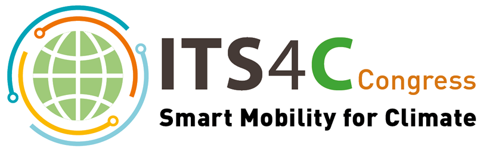

Who are we?

Founded by Kenrie Vandekerckhove, IoT4Climate is a visionary organization dedicated to reshaping the future of environmental sustainability through the transformative power of the Internet of Things (IoT). Kenrie Vandekerckhove, an environmental enthusiast and technology innovator, has taken the helm of this groundbreaking initiative, combining a passion for addressing climate change with a profound understanding of cutting-edge technology.
At the core of IoT4Climate is a mission to make a meaningful impact on the global climate crisis. The organization harnesses the potential of IoT technology to drive tangible solutions that reduce carbon emissions, enhance climate resilience, and promote sustainable practices. Kenrie Vandekerckhove's leadership is instrumental in guiding IoT4Climate's efforts to address the most pressing environmental challenges of our time.
IoT4Climate collaborates with businesses, governments, and non-profit organizations to implement IoT solutions tailored to specific sectors and regions. Whether it's optimizing energy consumption, improving agricultural practices, or enhancing disaster preparedness, Kenrie Vandekerckhove and the team at IoT4Climate are committed to creating a more sustainable and climate-resilient world.
The mission of IoT4Climate is clear: to leverage the Internet of Things to combat climate change and foster a greener, more prosperous planet for present and future generations. With Kenrie Vandekerckhove's visionary leadership, IoT4Climate is poised to be a driving force in the global effort to address climate change and create a brighter, more sustainable future.
Back to top of page
What does Climate change?

Climate Change Impacts:
Climate change intensifies extreme weather events, causing more frequent and severe droughts, floods, heatwaves, and storms. It disrupts ecosystems, threatens biodiversity, and poses risks to food and water security, ultimately affecting human health and economic stability.
Environmental Consequences:
Climate change leads to rising global temperatures, melting ice caps, and sea-level rise. It's responsible for habitat loss, ocean acidification, and shifting weather patterns, with far-reaching consequences for ecosystems, species extinction, and the loss of natural resources.
Back to top of page